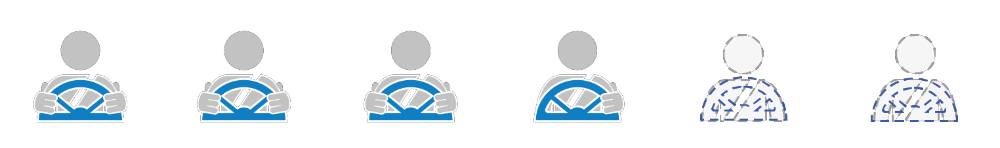

Self-driving cars, also known as autonomous cars or driverless cars, are vehicles that can travel between destinations without human assistance. To be fully autonomous, vehicles must be able to navigate, without any sort of human intervention, over roads that have not been adapted for its use.
How do Self-Driving Cars Work?
To build systems that can drive autonomously, a vast amount of data is used from image recognition systems, machine learning, and neural networks. Patterns in the data are identified by neural networks and fed into machine learning algorithms. Data may include camera images from which the neural network can identify traffic lights, trees, curbs, pedestrians, street signs, and other elements of the driving environment.
Example: Google's Waymo
Google’s Waymo is almost entirely autonomous. In ideal conditions, the car can drive itself. The car still requires a human driver to be present, but only to override the system if needed.
This is how Google's Waymo Vehicles Work:
The passengers specifies a destination and the car’s software calculates a route.
Rotating Lidar (light detection and ranging) sensors mounted on the roof monitor a range of 60 meters around the car and creates a dynamic, three-dimensional map of the car’s surroundings.
There is a sensor on the left rear wheel that monitors sideways movement and identifies the car’s position on the 3D map.
The front and rear end bumpers have radar systems that calculate distances to obstacles
The car’s software is connected to all the sensors and collects input from video cameras and Google Street View.
The car’s AI simulates human decision-making processes for actions such as steering and brakes.
The car’s software uses Google Maps to take note of objects like landmarks, traffic signs, and traffic lights in advance.
There is an override function that allows the passenger to take control of the vehicle when needed.
Waymo in Action:
Most of the cars available for consumers today still have low levels of autonomy. However, there are some self-driving features that are available in many cars. These include:
Hands-free steering (centering the car without the driver needing to keep their hands on the wheel)
Adaptive cruise control (can automatically maintain an acceptable distance behind the car in front)
Lane-centering steering (intervening when the driver is crossing lane markings).
Levels of Autonomy:
There are six levels of automation, from level 0 to level 5.

Level 0:
The car does not have any control over its operation and the human does all the driving.
Level 1:
The car’s advanced driver assistance system (ADAS) can support the driver with steering, accelerating, or braking (but not simultaneously).
Level 2:
The ADAS can steer or brake/accelerate simultaneously, but the driver needs to remain fully aware behind the wheel.
Level 3:
The car’s automated driving system (ADS) can perform most parts of driving, but the driver must be ready to take control when necessary.
Level 4:
The ADS can perform all driving tasks in certain conditions, and human attention is generally not required.
Level 5:
The ADS essentially acts as a chauffeur and can perform all parts of driving in all circumstances. Human attention is not required at all.